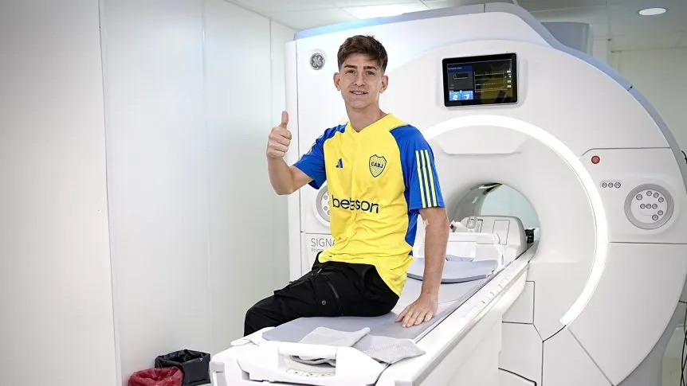

Belmonte llegó al país para convertirse en nuevo refuerzo de Boca
El mediocampista arribó desde México y será la segunda cara nueva del Xeneize, que pagará cuatro millones por el 50 por ciento de su ficha.

Tomás Belmonte es el segundo refuerzo que cerró Boca en este mercado de pases,
en el que se arma para competir en Liga Argentina, Copa Argentina y Sudamericana,
donde deberá afrontar el repechaje de 16avos de final ante Independiente del Valle.
El ex Lanús llegó este sábado por la noche al país, desde México, luego de su paso por el Toluca y este domingo por la mañana se sometió a la revisión médica. "Tengo palabras de agradecimiento para los hinchas, desde el primer día en que se dio la posibilidad de venir me mandaron su apoyo", expresó.
Luego, agregó: "Estuve en contacto con Román (Riquelme) y estoy muy feliz. Sé lo que es el mundo Boca, vamos a llevarlo de a poco, ahora espero hacer la revisión y sumarme al plantel".
Por el ex Lanús el Xeneize llegó a un acuerdo con los mexicanos para comprar el 50 por ciento de su ficha en cuatro millones de dólares.
¿Fanático del Xeneize? Enterate todas las noticias de Boca Juniors
a través de TyM. También podés registrarte gratis e indicar tus preferencias para recibir
notificaciones en tu browser. Proximamente nuestra APP dsiponible para todos los dispositivos
e iniciaremos cuentas en redes sociales como Instagram.